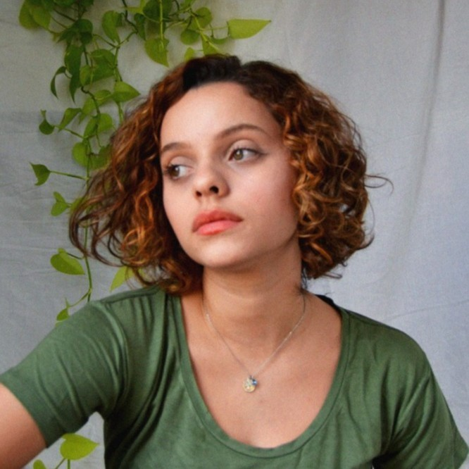

SOBRE
Oi! Sou designer e atuo entre Brasília e João Pessoa. Trabalho de forma independente desde 2023, com experiência em estúdios e projetos institucionais. Transito entre o design gráfico e o digital, com foco em publicações, projetos editoriais, sistemas visuais e web. Além disso, exploro programação criativa, design generativo e inteligência artificial em minhas produções. Aberta para trabalhos freelance.

CONTATO
ceciliagcartaxo@gmail.com
ÚLTIMOS PROJETOS
Restauro da Praça dos 3 Poderes
2026 (em andamento)
Meu Caderno de Cordel
2026
(Re)verso da Memória - Caio Tibúrcio
2026
Cozinha Viva
2026 (em andamento)
Inventário Participativo da Festa do Morango
2026 (em andamento)